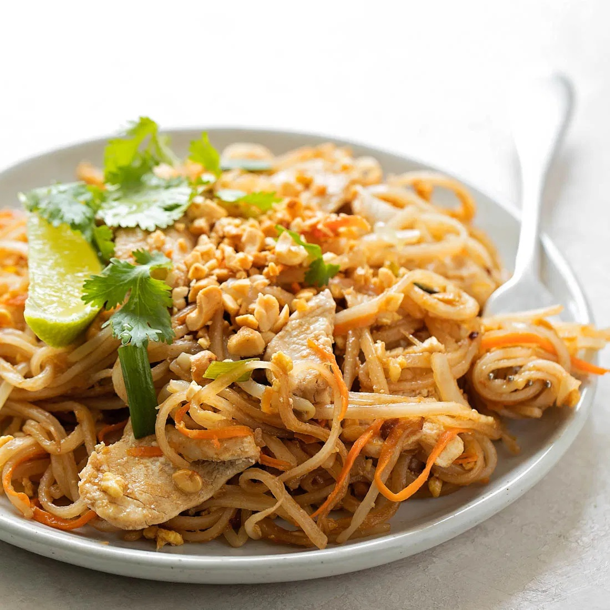

Recipes
Pad Thai Recipe

This amazing Pad Thai recipe is easy and comes together in under 30 minutes. It starts with fresh ingredients including rice noodles, chicken, shrimp, tofu, peanuts, scrambled eggs, and fresh vegetables all tossed together in a delicious homemade pad thai sauce.
Pad Thai is stir-fry dish made with rice noodles, shrimp, chicken, or tofu, peanuts, a scrambled egg and bean sprouts. The ingredients are sautéed together in a wok and tossed in a delicious Pad Thai sauce. It's a common street food in Thailand and one of the most popular menu items at Thai restaurants around the country.
To make vegan or vegetarian pad Thai, leave out the egg and substitute the fish sauce for more soy sauce.
- 8 ounces flat rice noodles
- 3 Tablespoons oil
- 3 cloves garlic, minced
- 8 ounces uncooked shrimp, chicken, or extra-firm tofu, cut into small pieces
- 2 eggs
- 1 cup of bean sprouts
- 1 red bell pepper
- 3 green onions, chopped
- 2 limes
- 1/2 cup of fresh cilantro
- Cook noodles according to package instructions, just until tender. Rinse under cold water.
- Make sauce by combining sauce ingredients in a bowl. Set aside.
- Stir Fry:: Heat 1½ tablespoons of oil in a large saucepan or wok over medium-high heat. Add the shrimp, chicken or tofu, garlic and bell pepper. The shrimp will cook quickly, about 1-2 minutes on each side, or until pink. If using chicken, cook until just cooked through, about 3-4 minutes, flipping only once.
- Push everything to the side of the pan. Add a little more oil and add the beaten eggs. Scramble the eggs, breaking them into small pieces with a spatula as they cook.
- Add noodles, sauce, bean sprouts and peanuts to the pan (reserving some peanuts for topping at the end). Toss everything to combine.
- Garnish the top with green onions, extra peanuts, cilantro and lime wedges. Serve immediately!
- Store leftovers in the fridge and enjoy within 2-3 days.